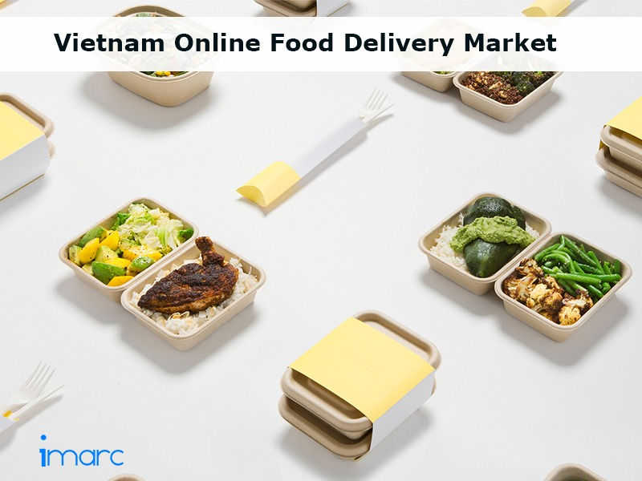
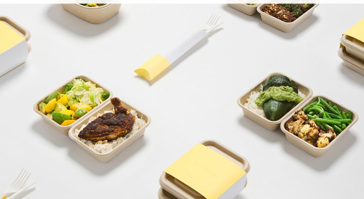

Vietnam Online Food Delivery Market Witnessing Robust Growth

Over the years, the Vietnam online food delivery market has been witnessing a robust growth.This can be highly attributed to changing lifestyles, increasing young population as well as various technological developments in food industry.
According to the latest report by IMARC Group, titled 'Vietnam Online Food Delivery Market: Industry Trends, Share, Size, Growth, Opportunity and Forecast 2019-2024', the online food delivery market in Vietnam is expected to grow at a CAGR of nearly 23% during 2019-2024.Online food delivery refers to the process of ordering food from a food cooperative or restaurant through mobile application or webpage which offer filters and different types of paying methods as per the need of consumers.The online service helps consumers to order food with optimum convenience and easy accessibility.They are also able to compare the prices and menus of several restaurants and food service providers by using various modes of online food delivery applications.In addition, these websites and applications provide a wide variety of food options depending upon the preferences of the consumers including Vietnamese Cuisines, Western Cuisines, and South Asian Cuisines among others.
Currently, the food service industry in Vietnam is experiencing a strong growth which is creating numerous opportunities for the online food delivery market in the region.Apart from this, over the past decade, there have been several technological developments in the Vietnam food industry which help in identifying recurring customers and, in turn, recommend them new food items based upon their previous orders.There has also been a rapid change in the lifestyles of consumers on account of rising urbanization and busy work schedules which has obligated them to opt for convenient food options.These are some of the factors which are proliferating the growth of the market in Vietnam.Moreover, the number of millennials is on a rise in the country which is further expected to support the market growth.However, various logistical challenges being faced by companies lead to a delay in the delivery of food which is obstructing the overall growth of the Vietnam online food delivery market.
Market Summary:
The competitive landscape of the market has also been examined with some of the key players being Vietnammm.com (Takeaway.Com N.V.), Foody.vn, Now.vn, Eat.vn and Grab food.
[bsa_pro_ad_space id=4]
Share on Facebook Tweet Follow us
Posted On: 2019-05-21T00:00:00
Posted By: Rahul Rastogi



Content Date: 2019-05-21
Download Date: 2021-07-09
Document ID: L0C04E97O